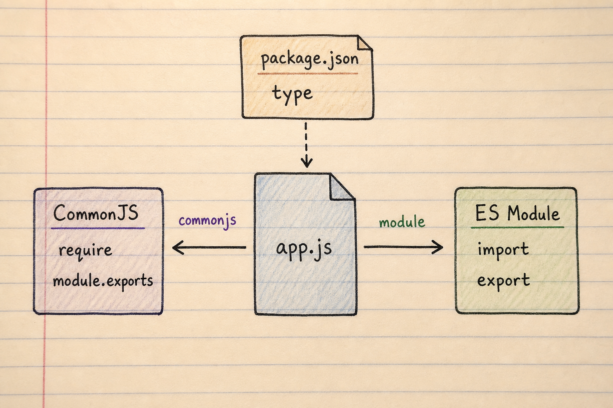

第 4 课：模块系统，把代码拆成多个文件
这一课解决一个真实问题：代码不可能永远写在一个 index.js 里。模块系统让一个文件把能力“导出”，另一个文件再“导入”使用。

type，让 Node.js 知道 .js 文件该按哪种模块规则解释。一、真实场景
假设你正在写一个后端项目。刚开始只有一个文件：
index.js后来你会想拆分：用户相关代码放一个文件，订单相关代码放一个文件，工具函数放一个文件。拆开以后，就需要一种方式让文件之间互相使用。
本课胜利条件：你能创建两个文件，让 message.js 导出内容，再让 app.js 导入并打印它。
二、两种模块系统
Node.js 官方文档说明，Node.js 有两套模块系统：CommonJS 和 ECMAScript modules，也就是常说的 ES Module。
CommonJS
这是 Node.js 很早就使用的模块格式，常见关键字是 require 和 module.exports。
const tool = require("./tool.js");
module.exports = tool;ES Module
这是 JavaScript 标准模块格式，常见关键字是 import 和 export。
import { message } from "./message.js";
export const message = "hello";这门课后面会优先使用 ES Module，因为它和现代 TypeScript、前端构建工具、很多新项目更容易衔接。
三、package.json 的 type 字段
你已经学过 package.json 是项目控制文档。到了模块系统，它又多了一个关键字段：type。
{
"type": "module"
}Node.js 官方 Packages 文档说明：当最近的 package.json 写了 "type": "module" 时，这个 package 里的 .js 文件会按 ES Module 解释。
| 写法 | Node.js 怎么理解 |
|---|---|
"type": "module" | .js 文件使用 import / export。 |
"type": "commonjs" | .js 文件使用 require / module.exports。 |
.mjs | 不管 type 怎么写，都按 ES Module。 |
.cjs | 不管 type 怎么写，都按 CommonJS。 |
四、复制粘贴练习
现在做一个最小 ES Module 项目。仍然只复制粘贴，重点观察文件之间如何连接。
1. 创建目录
mkdir module-lab
cd module-lab2. 创建 package.json
{
"name": "module-lab",
"version": "1.0.0",
"private": true,
"type": "module",
"scripts": {
"dev": "node app.js"
}
}3. 创建 message.js
export const message = "Hello from message.js";export 的意思是：这个文件把 message 暴露出去，允许别的文件使用。
4. 创建 app.js
import { message } from "./message.js";
console.log(message);import 的意思是：从另一个文件拿到它导出的内容。这里的 ./message.js 表示当前目录下的 message.js。
5. 运行
npm run dev你应该看到：
Hello from message.js观察重点：npm run dev 找到脚本，脚本启动 node app.js，app.js 再通过 import 使用 message.js 导出的内容。
五、即时练习
题 1：ES Module 常用哪组关键字？
题 2："type": "module" 会让 .js 文件按什么规则解释？
回忆练习：用 2-4 句话解释：为什么 app.js 能打印 message.js 里的文字？
六、课后小任务
在刚才项目里新增一个文件 name.js：
export const username = "Kamen Rider";然后修改 app.js：
import { message } from "./message.js";
import { username } from "./name.js";
console.log(message);
console.log(username);重新运行 npm run dev。如果能看到两行输出，说明你已经会让一个入口文件导入多个模块。
如果卡住，把 package.json、app.js 和报错发给我，我会带你定位是路径、文件名还是模块语法的问题。
主要来源
本课参考 Node.js ECMAScript modules 文档、Node.js CommonJS modules 文档 和 Node.js Packages 文档 对模块系统、type 字段、.mjs 与 .cjs 规则的说明。